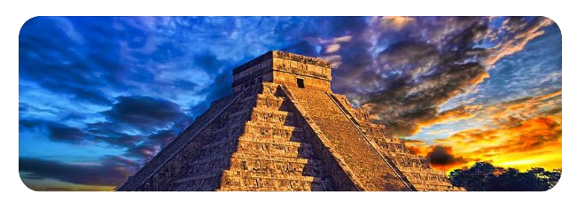
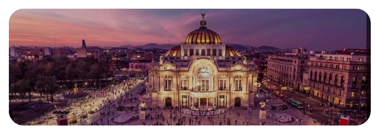
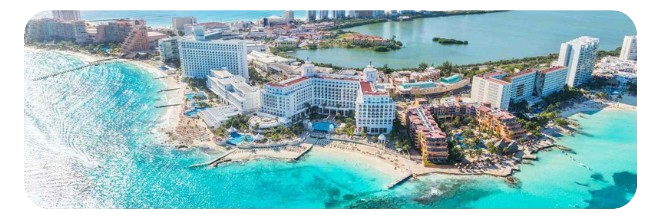
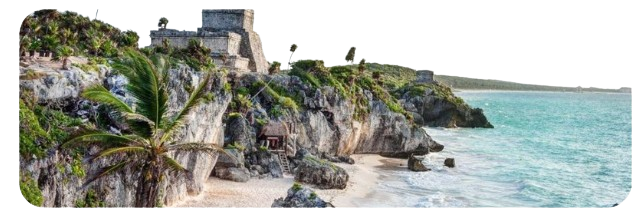
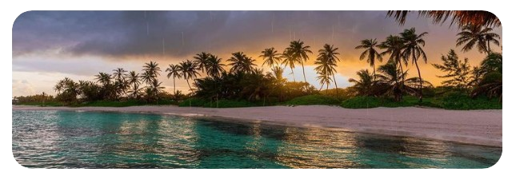
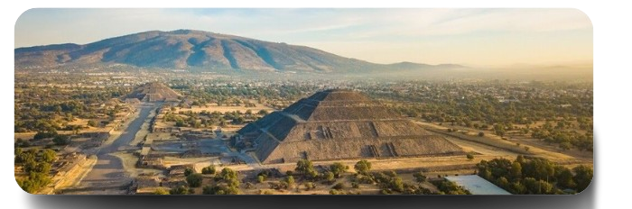
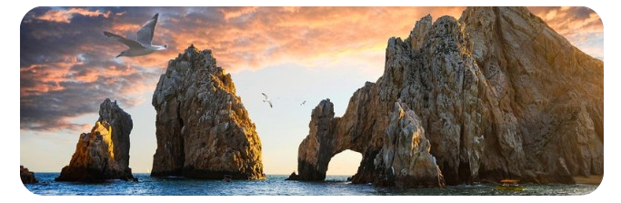
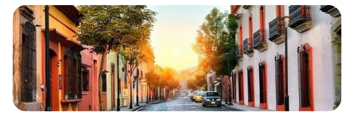
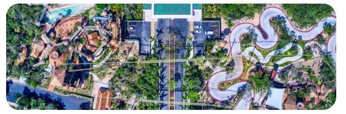

Pontos Turísticos
1- Chichén Itzá (Yucatán) Uma das Sete Maravilhas do Mundo Moderno — ruínas maias com a famosa Pirâmide de Kukulcán
2- Cidade do México (CDMX) A capital é cheia de cultura: Zócalo, Museu Nacional de Antropologia e o Castelo de Chapultepec.
3- Cancún (Quintana Roo) Destino número 1 dos turistas internacionais, com praias paradisíacas e resorts de luxo.
4- Tulum (Riviera Maya) Famoso pelas ruínas maias à beira-mar e pelo clima tranquilo e natural.
5- Playa del Carmen (Riviera Maya) Ponto central entre Cancún e Tulum, com vida noturna e acesso à Ilha de Cozumel
6- Teotihuacán (perto da Cidade do México) Antiga cidade pré-hispânica com as Pirâmides do Sol e da Lua — uma das maiores áreas arqueológicas da América.
7- Cabo San Lucas (Baixa Califórnia Sul) Famoso pelo “Arco de Cabo”, praias, mergulhos e avistamento de baleias.
8- San Miguel de Allende (Guanajuato) Cidade colonial charmosa, patrimônio da humanidade, com arquitetura colorida e ruas de pedra.
.png)
9- Oaxaca de Juárez (Oaxaca) Conhecida por sua gastronomia, arte, tradições indígenas e o sítio arqueológico de Monte Albán.
10- Parque Xcaret (Riviera Maya) Parque temático ecológico que mistura natureza, cultura maia e shows mexicanos — muito visitado por famílias.
